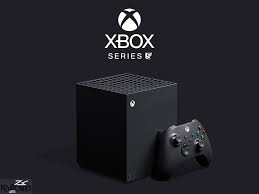

The Xbox Series X, released in November 2020, is the most powerful gaming console Microsoft has ever created. It features cutting-edge hardware, including a custom-designed AMD processor, 16 GB of RAM, and an ultra-fast solid-state drive (SSD) that drastically reduces load times. With its powerful specs, the Xbox Series X supports 4K gaming at 60 frames per second and can even reach 120 frames per second in some titles, offering a truly immersive gaming experience. The console also supports ray tracing, which enhances lighting and reflections for a more realistic visual experience. One of the Xbox Series X’s most praised features is its backward compatibility, allowing players to play games from previous Xbox generations, including Xbox One, Xbox 360, and original Xbox titles. The console also supports Smart Delivery, which automatically upgrades games to their best version, depending on the console being used. The Xbox Series X works seamlessly with Xbox Game Pass, giving players access to a vast library of games for a monthly subscription fee. Its sleek, tower-like design and whisper-quiet operation make it a standout in both performance and appearance. The Series X represents Microsoft’s vision for the future of gaming, focusing on speed, power, and versatility.
Source: target="_blank">Microsoft